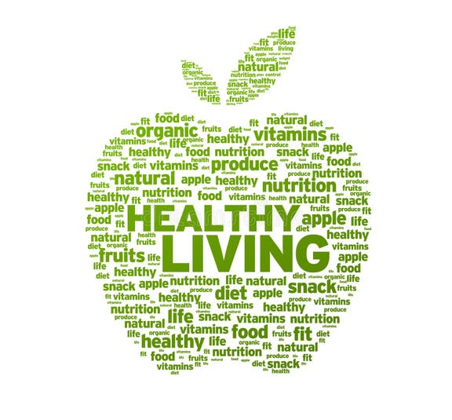
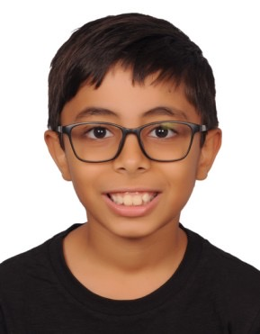

Ever wondered why you feel tired in class, lose focus while studying, or reach for junk food? Your daily habits could be the reason! For teenagers, getting enough sleep boosts energy and memory, managing screen time protects sleep and concentration, and eating nutritious food fuels both the body and brain. Small changes can make a big difference!
At HabitPulse, we help teenagers build healthier routines. Our logging and monitoring page tracks habits, provides useful data, and lets you set short- and long-term goals. Our expert advice and tips page offers guidance for improving daily habits, while our quiz page tests your knowledge of healthy living and makes learning fun.
At Habit Pulse, our mission is to empower teenagers to build healthier lifestyles by tracking and monitoring their sleep, screen time, nutrition, and daily habits. We aim to raise awareness, encourage mindful choices, and promote balanced routines that support teens' physical health, mental well-being, and overall growth, one habit at a time.
At Habit Pulse, our vision is to create a healthier, happier, and more balanced generation of teenagers. We aspire to help teens understand their daily habits, make informed lifestyle choices, and develop positive routines around sleep, screen time, and nutrition, empowering them to build a strong foundation for lifelong health and well-being.
Krish Chandwani
